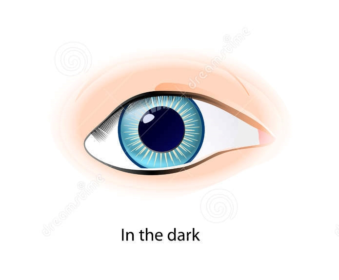

Identify parts of an Eye Understand the functions of different parts of the eye
Tap on the image to see the differences of the size of the pupil during the dark and bright lit place.

How does the eye focus?
The cornea is shaped like a dome and bends light to help the eye focus.
The eye focuses by adjusting its lens such that sharp images of objects from different distances are formed in the retina.
Focusing on near objects
1.When looking at near objects,cililary muscles contract,
thus causing the suspensory ligaments to become relaxed.
2.The lens becomes more convex and thicker,
thus decreasing its focal length to focus the light rays onto the retina.
Focusing on distant objects
1.When looking at distant objects, ciliary muscles relax causing the suspensory ligaments to become taut(tighten)
2.The lens becomes less convex and thinnerthus increasing its focal length to focus the light rays onto the retina.
Pupil reflex
The pupil reflex is an involuntary response of pupil to different light conditions.
(a) Bright light
1. In bright light,circular muscles of the iris contractwhile the radial muscles relax.
2. The pupil becomes smaller.
3. This decreaases the amount of light entering the eye thus preventing damange to the retina
(b) Dim light
1. In dim light, circular muscles of the iris relax while the radial muscles contract.
2. The pupil becomes larger and more light enters the eye, which allows us to see better in the dark.